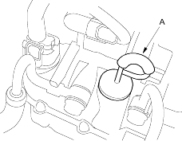
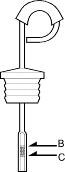
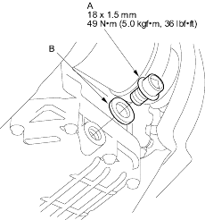

- Warm up the engine to normal operating temperature (the radiator fan comes on).
- Park the vehicle on level ground and turn the engine off.
- Remove the dipstick (yellow loop) (A) from the transmission and wipe it with a clean cloth.

- Insert the dipstick into the transmission.
- Remove the dipstick and check the fluid level. It should be between the upper mark (B) and lower mark (C).

- If the level is below the lower mark, pour the recommended fluid into the dipstick hole to bring it to the upper mark. Always use genuine Honda ATF-Z1 Automatic Transmission Fluid (ATF). Using a non-Honda ATF can affect shift quality.
- Insert the dipstick back into the transmission.
Change Intervals:
Replace at 80,000 km (48,000 miles) or 48 months, thereafter every 60,000 km (36,000 miles) or 36 months in normal conditions.
Replace every 40,000 km (24,000 miles) or 24 months in severe conditions.
- Bring the transmission up to operating temperature (the radiator fan comes on) by driving the vehicle.
- Park the vehicle on level ground and turn the engine off.
- Remove the drain plug (A) and drain the automatic transmission fluid (ATF).

- Reinstall the drain plug with a new sealing washer (B).
- Refill the transmission with the recommended fluid into dipstick hole to the upper mark on the dipstick. Always use genuine Honda ATF-Z1 Automatic Transmission Fluid (ATF). Using a non-Honda ATF can affect shift quality.
Automatic Transmission Fluid Capacity:
3.1 l (3.3 US qt, 2.7 lmp qt) at change
5.6 l (5.9 US qt, 4.9 lmp qt) at overhaul